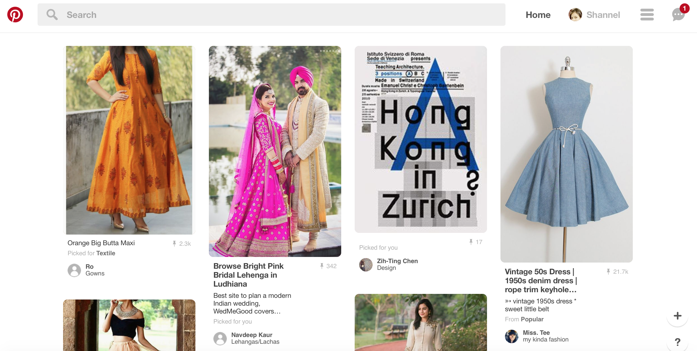
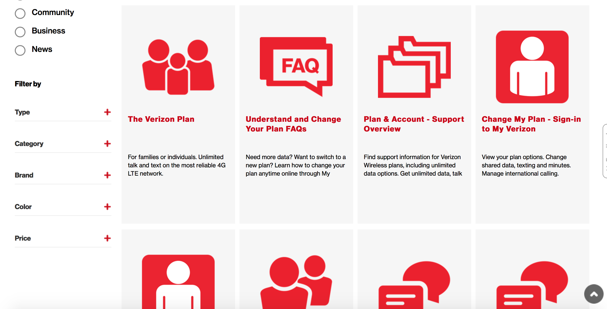
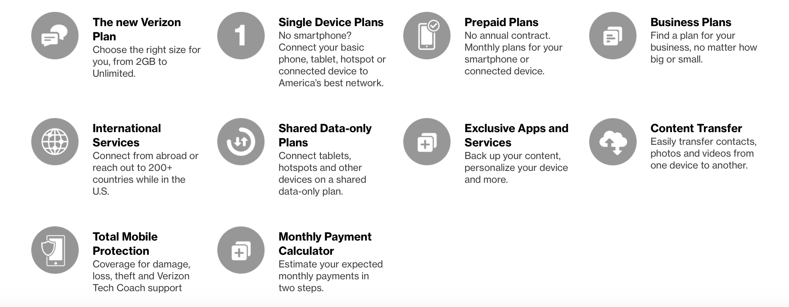

An Effective Website
Pinterest has a home page that is easy to navigate through. The top right corner has all the menu options in a list format, making it feasible to choose along with the ‘Profile’ option.

The search is also fairly simple, giving all the results throughout the web page with pictures and tags clearly executed. The design makes it quick for the users to navigate through the website.
The filters are well listed on the left side with the ‘menu’ and ‘profile’ option always on the top right at any given point, making it fast for users to go back and forth from one page to another. It would be pretty easy for users to access the website even after a period of time since the concept and the content of the web page is straightforward and clear with minimal complexities and effortless navigation. Users may make slip errors however, it is extremely easy to be fixed by either just re-loading the search or going back to the previous page. The errors may not be severe for this website due to its simplicity and minimal design features. It is quite pleasant to use the website with numerous picture illustrations and easy texts along with all the content that is well organized throughout the website.
A Less Effective Website
Verizon has a home-page which is clearly divided into three categories. However, the moment a user clicks on one of the category, it gets confusing. The purpose of accomplishing the task has its design just placed in the lower-center half of the web page while the rest of the page is filled with advertisements and content not relevant to the purpose.
There are way too many filters and sub categories which open on new, long web pages, making it hard to go back and forth from purpose to another.
On learning the design, performing tasks can still be tedious. Having too many options to choose from can be confusing, sometimes misleading the user from their purpose. The user has to deconstruct through the website a number of times to get to their desired page. Even on searching through the “What I am looking for” page, the abundance of options ends up leading the user to no where.


In my opinion, it would take them time to figure out the content in relation to their purpose. As the desired web-page has no ‘short-cut’ to get to, the user would still have to go through each and every content in order to figure out their desired page. It would be hard to keep memory of the numerous content, all squeezed into one page at a time. Users could make slip errors however not mistakes. The website is clear with content and not misleading as far as mistakes on their half is concerned in spite of the crowding on each web page. The slips can or cannot be severe depending on the user but can mostly be avoided with the simple use of color and font type. Error recovery can be a little tedious if they have to figure out their purpose all over again from the beginning.The design is clear with its aesthetic and choice of color, size and fonts. However, users would be just about satisfied due to the copiousness of content from one page to another with unnecessary information on each page, irrelevant to the purpose.